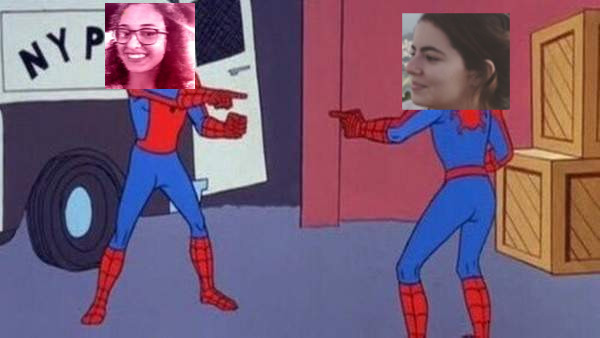
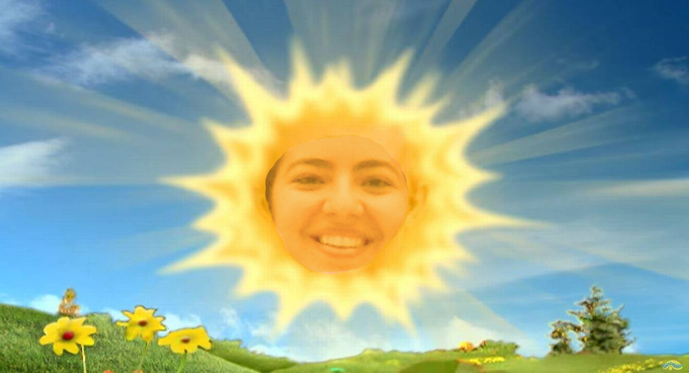
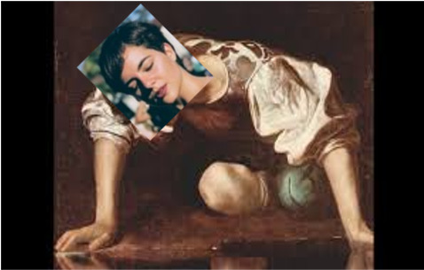

<DOCTYPE!html>

  <head>
    <link rel="stylesheet" type="text/css" href="claranews.css">
    <link href="https://fonts.googleapis.com/css?family=Roboto:400,700&display=swap" rel="stylesheet"> 
    <meta charset="UTF-8">
    <title>Clara Capital</title>
  </head>

  <body>
    <div class="content">

    <h6 class="data_no_cabecalho"> Todo dia é Dia de Truvs, 2019 </h6>

    

    <div class="cabecalho">
      <ul style="list-style-type: none;">
       <a> Piadas de tio </a> 
       <a> Histórias duvidosas </a> 
       <a> Origins: por trás da lenda </a>
       <a> Cláudia: um alter ego</a> 
      </ul>
    </div>
   
    <h6 class="destaque">Escândalo</h6>
    <span class="manchete"><h1>Trainee é flagrada escapulindo para Recife no meio do PT</h1>
    <span class="texto"> Testemunhas se dizem surpresas com tamanha cara de pau, embora a acusada alegue estar indo apenas para a formatura de sua irmã</span>
    </span>
    </br>
    
   
    
    <div class="lateral">
        <div class="manchetinhas">
          <div class="tit_manchetinhas"><h1>Outra Clara se diz #cansadah</h1></div>
          <span class="paragrafo"> "Não aguento mais a confusão, alguém tem que inventar um apelido que pegue", deClara</span></br>
          
        </div>
    </div>

    <div class="manchetes_menores">

        <div class="manchetinhas">
          <h6 class="destaque">Previsão do clima</h6>
          <div class="tit_manchetinhas"><h1>Calor pra claralho</h1></div>
          <span class="paragrafo"> Em Recife e em Brasília: a previsão é que fique quente pra misera nos próximos dias</span>
          
        </div> 

        <div class="manchetinhas">
          <h6 class="destaque">Será que já passou do limite</h6>
          <div class="tit_manchetinhas"><h1>Narcisismo: quando é hora de parar de fazer trocadilhos com o próprio nome?</h1></div>
          <span class="paragrafo"> A produção pede desculpas pelo excesso de trocadilhhos de gosto duvidoso, informando que uma vez que se começa é difícil de parar</span></br>
          
        </div>
    </div>
  </div>
  

  </body>

  </html>